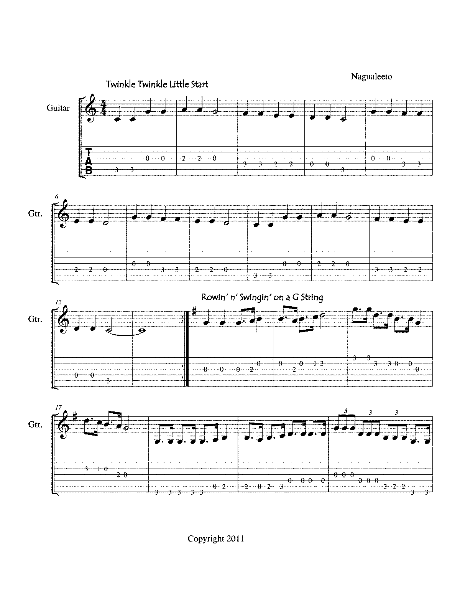

Week 3: Analyzing "Twinkle Twinkle Little Star"
Analysis Overview: In this week, we analyzed the song "Twinkle Twinkle Little Star" by using tools like MuseScore and Sonic Visualiser. We focused on analyzing the structure of the song, including its melody and harmony.
Analysis Results
Melody: The song "Twinkle Twinkle Little Star" follows a simple **AB** structure. The melody is repetitive and based on a **C major scale**. The main phrase "Twinkle, twinkle, little star" is repeated twice with slight variations in rhythm.
Harmony: The harmonic structure is based on the **I-IV-V-I** chord progression. The primary chords used are **C major (I)**, **F major (IV)**, and **G major (V)**. This is typical of many children's songs and gives the melody a bright, harmonious feel.
Visualization: The following image shows the sheet music for "Twinkle Twinkle Little Star" as analyzed with MuseScore. The melody is highlighted in the treble clef.
Sonic Visualiser Analysis
The pitch analysis of the song is visualized below. We used Sonic Visualiser to show the pitch fluctuations and timing of the melody.
Pitch and Timing Analysis
The chart below represents the **timing** of the melody's notes, with each note represented by its frequency and duration. The analysis was done using Sonic Visualiser’s **spectrogram** and **waveform** views.
Conclusion
Based on our analysis of the sheet music and visualizations, we can conclude that the song is straightforward, with a simple repeating melody and predictable harmonic structure. The use of **C major** and the **I-IV-V-I progression** provides a sense of familiarity and ease, which is ideal for a children's song like "Twinkle Twinkle Little Star."
Next Week →